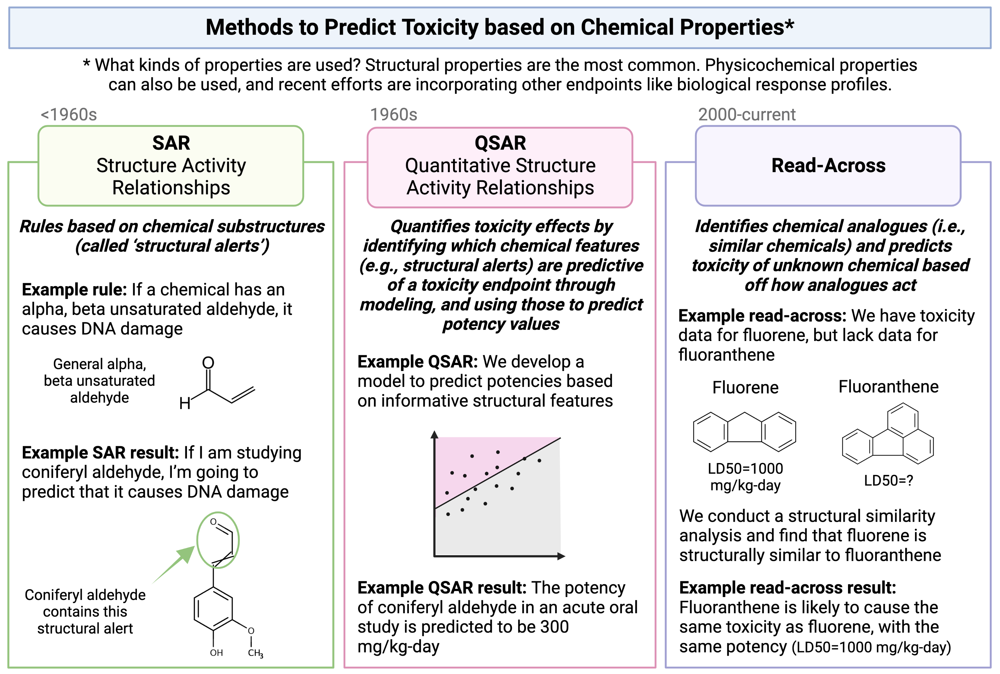
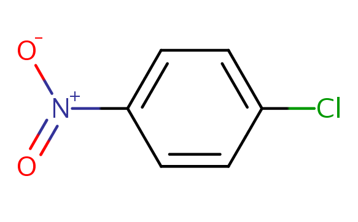
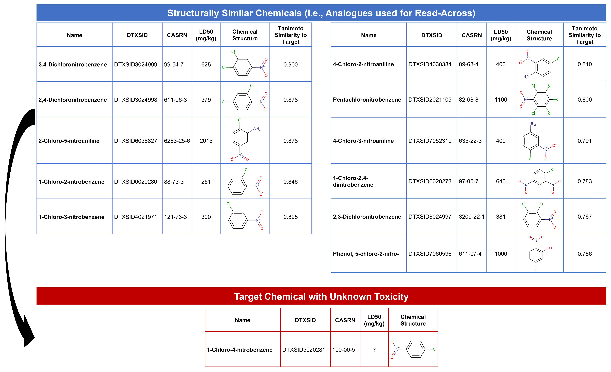

Chemical Read-Across for Toxicity Predictions
This training module was developed by Grace Patlewicz, Lauren E. Koval, Alexis Payton, and Julia E. Rager.
All input files (script, data, and figures) can be downloaded from the UNC-SRP TAME2 GitHub website.
Disclaimer: The views expressed in this document are those of the author and do not necessarily reflect the views or policies of the U.S. EPA.
Introduction to Training Module
The method of read-across represents one type of computational approach that is commonly used to predict a chemical’s toxicological effects using its properties. Other types of approaches that you will hear commonly used in this field include SAR and QSAR analyses. A high-level overview of each of these definitions and simple illustrative examples of these three computational modeling approaches is provided in the following schematic: 
Focusing more on read-across, this computational approach represents the method of filling a data gap whereby a chemical with existing data values is used to make a prediction for a ‘similar’ chemical, typically one which is structurally similar. Thus, information from chemicals with data is read across to chemical(s) without data.
In a typical read-across workflow, the first step is to determine the problem definition - what question are we trying to address. The second step starts the process of identifying chemical analogues that have information that can be used to inform this question, imparting information towards a chemical of interest that is lacking data. A specific type of read-across that is commonly employed is termed ‘Generalized Read-Across’ or GenRA, which is based upon similarity-weighted activity predictions. This type of read-across approach will be used here when conducting the example chemical read-across training module. This approach has been previously described and published:
- Shah I, Liu J, Judson RS, Thomas RS, Patlewicz G. Systematically evaluating read-across prediction and performance using a local validity approach characterized by chemical structure and bioactivity information. Regul Toxicol Pharmacol. 2016 79:12-24. PMID: 27174420
Introduction to Activity
In this activity we are going to consider a chemical of interest (which we call the target chemical) that is lacking acute oral toxicity information. Specifically, we would like to obtain estimates of the dose that causes lethality after acute (meaning, short-term) exposure conditions. These dose values are typically presented as LD50 values, and are usually collected through animal testing. There is huge interest surrounding the reduced reliance upon animal testing, and we would like to avoid further animal testing as much as possible. With this goal in mind, this activity aims to estimate an LD50 value for the target chemical using completely computational approaches, leveraging existing data as best we can. To achieve this aim, we explore ways in which we can search for structurally similar chemicals that have acute toxicity data already available. Data on these structurally similar chemicals, termed ‘source analogues’, are then used to predict acute toxicity for the target chemical of interest using the GenRA approach.
The dataset used for this training module were previously compiled and published in the following manuscript: Helman G, Shah I, Patlewicz G. Transitioning the Generalised Read-Across approach (GenRA) to quantitative predictions: A case study using acute oral toxicity data. Comput Toxicol. 2019 Nov 1;12(November 2019):10.1016/j.comtox.2019.100097. doi: 10.1016/j.comtox.2019.100097. PMID: 33623834
- With associated data available at: https://github.com/USEPA/CompTox-GenRA-acutetox-comptoxicol/tree/master/input
This exercise will specifically predict LD50 values for the chemical, 1-chloro-4-nitrobenzene (DTXSID5020281). This chemical is an organic compound with the formula ClC˜6˜H˜4˜NO˜2˜, and is a common intermediate in the production of a number of industrial compounds, including common antioxidants found in rubber.
Training Module’s Environmental Health Questions
This training module was specifically developed to answer the following environmental health questions:
- How many chemicals with acute toxicity data are structurally similar to 1-chloro-4-nitrobenzene?
- What is the predicted LD50 for 1-chloro-4-nitrobenzene using the GenRA approach?
- How different is the predicted vs. experimentally observed LD50 for 1-chloro-4-nitrobenzene?
Read-Across Example Analysis
Loading Example Datasets
Let’s start by loading the datasets needed for this training module. We are going to use a dataset of substances that have chemical identification information ready in the form of SMILES, as well as acute toxicity data, in the form of LD50 values.
The first file to upload is named Module6_6_InputData1.csv and contains the list of substances and their structural information, in the form of SMILES nomenclature. SMILES stands for Simplified molecular-input line-entry system, a form of line notation to describe the structure of a chemical.
The second file to upload is named Module6_6_InputData2.csv and contains the substances and their acute toxicity information.
substances <- read.csv("Module6_7_Input/Module6_7_InputData1.csv")
acute_data <- read.csv("Module6_7_Input/Module6_7_InputData2.csv")Let’s first view the substances dataset:
## [1] 6955 4## [1] "DTXSID" "PREFERRED_NAME" "SMILES"
## [4] "QSAR_READY_SMILES"## DTXSID PREFERRED_NAME
## 1 DTXSID00142939 (Acetyloxy)acetonitrile
## 2 DTXSID00143108 Acrylic acid, 2-(hydroxymethyl)-, ethyl ester
## 3 DTXSID00143880 4-Heptyl-2,6-dimethylphenol
## 4 DTXSID00144796 Pyrimidine, 2-amino-4-(2-dimethylaminoethoxy)-
## 5 DTXSID00144933 O,O,O-Tris(2-chloroethyl) phosphorothioate
## 6 DTXSID00146356 Citenamide
## SMILES QSAR_READY_SMILES
## 1 CC(=O)OCC#N CC(=O)OCC#N
## 2 CCOC(=O)C(=C)CO CCOC(=O)C(=C)CO
## 3 CCCCCCCC1=CC(C)=C(O)C(C)=C1 CCCCCCCC1=CC(C)=C(O)C(C)=C1
## 4 CN(C)CCOC1=NC(N)=NC=C1 CN(C)CCOC1=NC(N)=NC=C1
## 5 ClCCOP(=S)(OCCCl)OCCCl ClCCOP(=S)(OCCCl)OCCCl
## 6 NC(=O)C1C2=CC=CC=C2C=CC2=CC=CC=C12 NC(=O)C1C2=CC=CC=C2C=CC2=CC=CC=C12We can see that this dataset contains information on 6955 chemicals (rows). The columns are further described below:
DTXSIDs: a substance identifier provided through the U.S. EPA’s Computational Toxicology DashboardSMILESandQSAR_READY_SMILES: Chemical identifiers. The QSAR_READY_SMILES values are what we will specifically need in a later step, to construct chemical fingerprints from.QSAR_READY_SMILES:SMILESthat have been standardized related to salts, tautomers, inorganics, aromaticity, and stereochemistry (among other factors) prior to any QSAR modeling or prediction.
Let’s make sure that these values are recognized as character format and placed in its own vector, to ensure proper execution of functions throughout this script:
Now let’s view the acute toxicity dataset:
## [1] 6955 9## [1] "DTXSID" "very_toxic" "nontoxic" "LD50_mgkg" "EPA_category"
## [6] "GHS_category" "casrn" "mol_weight" "LD50_LM"## DTXSID very_toxic nontoxic LD50_mgkg EPA_category GHS_category
## 1 DTXSID00142939 TRUE FALSE 32 1 2
## 2 DTXSID00143108 FALSE FALSE 620 3 4
## 3 DTXSID00143880 FALSE FALSE 1600 3 4
## 4 DTXSID00144796 FALSE FALSE 1500 3 4
## 5 DTXSID00144933 FALSE FALSE 820 3 4
## 6 DTXSID00146356 FALSE FALSE 1800 3 4
## casrn mol_weight LD50_LM
## 1 1001-55-4 99.089 0.4908755
## 2 10029-04-6 130.143 -0.6779709
## 3 10138-19-9 220.356 -0.8609951
## 4 102207-77-2 182.227 -0.9154785
## 5 10235-09-3 301.540 -0.4344689
## 6 10423-37-7 235.286 -0.8836764We can see that this dataset contains information on 6955 chemicals (rows). Some notable columns are explained below:
+ DTXSIDs: a substance identifier provided through the U.S. EPA’s Computational Toxicology Dashboard
+ casrn: CASRN number
+ mol_weight: molecular weight
+ LD50_LM: the -log10 of the millimolar LD50. LD stands for ‘Lethal Dose’. The LD50 value is the dose of substance given all at once which causes the death of 50% of a group of test animals. The lower the LD50 in mg/kg, the more toxic that substance is.
Important Notes on Units
In modeling studies, the convention is to convert toxicity values expressed as mg per unit into their molar or millimolar values and then to convert these to the base 10 logarithm. To increase clarity when plotting, such that higher toxicities would be expressed by higher values, the negative logarithm is then taken. For example, substance DTXSID00142939 has a molecular weight of 99.089 (grams per mole) and a LD50 of 32 mg/kg. This would be converted to a toxicity value of (\(\frac{32}{99.089} = 0.322942~mmol/kg\)). The logarithm of that would be -0.4908755. By convention, the negative logarithm of the millimolar concentration would then be used i.e. -log[mmol/kg]. This conversion has been used to create the LD50_LM values in the acute toxicity dataset.
Let’s check to see whether the same chemicals are present in both datasets:
# First need to make sure that both dataframes are sorted by the identifier, DTXSID
substances <- substances[order(substances$DTXSID),]
acute_data <- acute_data[order(acute_data$DTXSID),]
# Then test to see whether data in these columns are equal
unique(substances$DTXSID == acute_data$DTXSID)## [1] TRUEAll accounts are true, meaning they are all equal (the same chemical).
Data Visualizations of Acute Toxicity Values
Let’s create a plot to show the distribution of the LD50 values in the dataset.
Can you see a difference between these two plots? Yes, if the LD50 mg/kg values are converted into -log[mmol/kg] scale (LD50_LM), then the distribution resembles a normal cumulative distribution curve.
Selecting the ‘Target’ Chemical of Interest for Read-Across Analysis
For this exercise, we will select a ‘target’ substance of interest from our dataset, and assume that we have no acute toxicity data for it, and we will perform read-across for this target chemical. Note that this module’s example dataset actually has full data coverage (meaning all chemicals have acute toxicity data), but this exercise is beneficial, because we can make toxicity predictions, and then check to see how close we are by viewing the experimentally observed values.
Our target substance for this exercise is going to be DTXSID5020281, which is 1-chloro-4-nitrobenzene. This chemical is an organic compound with the formula ClC6H4NO2, and is a common intermediate in the production of a number of industrially useful compounds, including common antioxidants found in rubber. Here is an image of the chemical structure (https://comptox.epa.gov/dashboard/dsstoxdb/results?search=DTXSID5020281):

Filtering the dataframes for only data on this target substance:
target_substance <-filter(substances, DTXSID == 'DTXSID5020281')
target_acute_data <- filter(acute_data, DTXSID == 'DTXSID5020281')Calculating Structural Similarities between Substances
To eventually identify chemical analogues with information that can be ‘read-across’ to our target chemical (1-chloro-4-nitrobenzene), we first need to evaluate how similar each chemical is to one another. In this example, we will base our search for similar substances upon similarities between chemical structure fingerprint representations. Once these chemical structure fingerprints are derived, they will be used to calculate the degree to which each possible pair of chemicals is similar, leveraging the Tanimoto metric. These findings will yield a similarity matrix of all possible pairwise similarity scores.
Converting Chemical Identifiers into Molecular Objects (MOL)
To derive structure fingerprints across all evaluated substances, we need to first convert the chemical identifiers originally provided as QSAR_READY_SMILES into molecular objects. The standard exchange format for molecular information is a MOL file. This is a chemical file format that contains plain text information and stores information about atoms, bonds and their connections.
We can carry out these identifier conversions using the ‘parse.smiles’ function within the rcdk package. Here we do this for the target chemical of interest, as well as all substances in the dataset.
Computing chemical fingerprints
With these mol data, we can now compute the fingerprints for our target substance, as well as all the substances in the dataset. We can compute fingerprints leveraging the get.fingerprint() function. Let’s first run it on the target chemical:
## Fingerprint object
## name =
## length = 1024
## folded = FALSE
## source = CDK
## bits on = 13 18 96 162 165 174 183 203 214 224 235 254 305 313 400 513 575 602 619 638 662 723 742 743 744 770 771 787 839 844 845 884 932 958 978 989We can run the same function over the entire all_mols dataset, leveraging the lapply() function:
Calculating Chemical Similarities
Using these molecular fingerprint data, we can now calculate the degree to which each chemical is similar to another chemical, based on structural similarity. The method employed in this example is the Tanimoto method. The Tanimoto similarity metric is a unitless number between zero and one that measures how similar two sets (in this case 2 chemicals) are from one another. A Tanimoto index of 1 means the 2 chemicals are identical whereas a index of 0 means that the chemicals share nothing in common. In the context of the fingerprints, a Tanimoto index of 0.5 means that half of the fingerprint matches between two chemicals whilst the other half does not match.
Once these Tanimoto similarity indices are calculated between every possible chemical pair, the similarity results can be viewed in the form of a similarity matrix. In this matrix, all substances are listed across the rows and columns, and the degree to which every possible chemical pair is similar is summarized through values contained within the matrix. Further information about chemical similarity can be found here: https://en.wikipedia.org/wiki/Chemical_similarity
Steps to generate this similarity matrix are detailed here:
all.fp.sim <- fingerprint::fp.sim.matrix(all.fp, method = 'tanimoto')
all.fp.sim <- as.data.frame(all.fp.sim) # Convert the outputted matrix to a dataframe
colnames(all.fp.sim) = substances$DTXSID # Placing chemical identifiers back as column headers
row.names(all.fp.sim) = substances$DTXSID # Placing chemical identifiers back as row namesSince we are querying a large number of chemicals, it is difficult to view the entire resulting similarity matrix. Let’s, instead view portions of these results:
## DTXSID00142939 DTXSID00143108 DTXSID00143880 DTXSID00144796
## DTXSID00142939 1.00000000 0.38235294 0.09090909 0.10389610
## DTXSID00143108 0.38235294 1.00000000 0.09523810 0.09302326
## DTXSID00143880 0.09090909 0.09523810 1.00000000 0.09183673
## DTXSID00144796 0.10389610 0.09302326 0.09183673 1.00000000
## DTXSID00144933 0.17948718 0.14583333 0.09677419 0.06896552
## DTXSID00144933
## DTXSID00142939 0.17948718
## DTXSID00143108 0.14583333
## DTXSID00143880 0.09677419
## DTXSID00144796 0.06896552
## DTXSID00144933 1.00000000## DTXSID00146356 DTXSID00147863 DTXSID00148532 DTXSID00148976
## DTXSID00146356 1.00000000 0.05128205 0.12574850 0.10077519
## DTXSID00147863 0.05128205 1.00000000 0.04166667 0.05050505
## DTXSID00148532 0.12574850 0.04166667 1.00000000 0.08808290
## DTXSID00148976 0.10077519 0.05050505 0.08808290 1.00000000
## DTXSID00149721 0.35294118 0.07526882 0.15083799 0.08843537
## DTXSID00149721
## DTXSID00146356 0.35294118
## DTXSID00147863 0.07526882
## DTXSID00148532 0.15083799
## DTXSID00148976 0.08843537
## DTXSID00149721 1.00000000You can see that there is an identity line within this similarity matrix, where instances when a chemical’s structure is being compared to itself, the similarity values are 1.00000.
All other possible chemical pairings show variable similarity scores, ranging from:
## [1] 0a minimum of zero, indicating no similarities between chemical structures.
## [1] 1a maximum of 1, indicating the identical chemical structure (which occurs when comparing a chemical to itself).
Identifying Chemical Analogues
This step will find substances that are structurally similar to the target chemical, 1-chloro-4-nitrobenzene (with DTXSID5020281). Structurally similar chemicals are referred to as ‘source analogues’, with information that will be carried forward in this read-across analysis.
The first step to identifying chemical analogues is to subset the full similarity matrix to focus just on our target chemical.
Then we’ll extract the substances that exceed a similarity threshold of 0.75 by selecting to keep columns which are > 0.75.
target.sim <- target.sim %>%
select_if(function(x) any(x > 0.75))
dim(target.sim) # Show dimensions of subsetted matrix## [1] 1 12This gives us our analogues list! Specifically, we selected 12 columns of data, representing our target chemical plus 11 structurally similar chemicals. Let’s create a dataframe of these substance identifiers to carry forward in the read-across analysis:
source_analogues <- t(target.sim) # Transposing the filtered similarity matrix results
DTXSID <-rownames(source_analogues) # Temporarily grabbing the dtxsid identifiers from this matrix
source_analogues <- cbind(DTXSID, source_analogues) # Adding these identifiers as a column
rownames(source_analogues) <- NULL # Removing the rownames from this dataframe, to land on a cleaned dataframe
colnames(source_analogues) <- c('DTXSID', 'Target_TanimotoSim') # Renaming column headers
source_analogues[1:12,1:2] # Viewing the cleaned dataframe of analogues## DTXSID Target_TanimotoSim
## [1,] "DTXSID0020280" "0.846153846153846"
## [2,] "DTXSID2021105" "0.8"
## [3,] "DTXSID3024998" "0.878048780487805"
## [4,] "DTXSID4021971" "0.825"
## [5,] "DTXSID4030384" "0.80952380952381"
## [6,] "DTXSID5020281" "1"
## [7,] "DTXSID6020278" "0.782608695652174"
## [8,] "DTXSID6038827" "0.878048780487805"
## [9,] "DTXSID7052319" "0.790697674418605"
## [10,] "DTXSID7060596" "0.765957446808511"
## [11,] "DTXSID8024997" "0.767441860465116"
## [12,] "DTXSID8024999" "0.9"Answer to Environmental Health Question 1
With these, we can answer Environmental Health Question #1: How many chemicals with acute toxicity data are structurally similar to 1-chloro-4-nitrobenzene?
Answer: In this dataset, 11 chemicals are structurally similar to the target chemical, based on a Tanimoto similiary score of > 0.75.
Chemical Read-Across to Predict Acute Toxicity
Acute toxicity data from these chemical analogues can now be extracted and read across to the target chemical (1-chloro-4-nitrobenzene) to make predictions about its toxicity.
Let’s first merge the acute data for these analogues into our working dataframe:
Then, let’s remove the target chemical of interest and create a new dataframe of just the source analogues:
source_analogues_only <- source_analogues %>%
filter(Target_TanimotoSim!=1) # Removing the row of data with the target chemical, identified as the chemical with a similarity of 1 to itself
source_analogues_only[1:11,1:10] # Viewing the combined dataset of source analogues## DTXSID Target_TanimotoSim very_toxic nontoxic LD50_mgkg EPA_category
## 1 DTXSID0020280 0.846153846153846 FALSE FALSE 251 2
## 2 DTXSID2021105 0.8 FALSE FALSE 1100 3
## 3 DTXSID3024998 0.878048780487805 FALSE FALSE 379 2
## 4 DTXSID4021971 0.825 FALSE FALSE 300 2
## 5 DTXSID4030384 0.80952380952381 FALSE FALSE 400 2
## 6 DTXSID6020278 0.782608695652174 FALSE FALSE 640 3
## 7 DTXSID6038827 0.878048780487805 FALSE TRUE 2015 3
## 8 DTXSID7052319 0.790697674418605 FALSE FALSE 400 2
## 9 DTXSID7060596 0.765957446808511 FALSE FALSE 1000 3
## 10 DTXSID8024997 0.767441860465116 FALSE FALSE 381 2
## 11 DTXSID8024999 0.9 FALSE FALSE 625 3
## GHS_category casrn mol_weight LD50_LM
## 1 3 88-73-3 157.55 -0.2022553
## 2 4 82-68-8 295.32 -0.5710998
## 3 4 611-06-3 192.00 -0.2953380
## 4 4 121-73-3 157.55 -0.2797028
## 5 4 89-63-4 172.57 -0.3650947
## 6 4 97-00-7 202.55 -0.4996477
## 7 5 6283-25-6 172.57 -1.0673097
## 8 4 635-22-3 172.57 -0.3650947
## 9 4 611-07-4 173.55 -0.7605754
## 10 4 3209-22-1 192.00 -0.2976237
## 11 4 99-54-7 192.00 -0.5125788Read-across Calculations using GenRA
The final generalized read-across (GenRA) prediction is based on a similarity-weighted activity score. This score is specifically calculated as the following weighted average:
(pairwise similarity between the target and source analogue) * (the toxicity of the source analogue), summed across each individual analogue; and then this value is divided by the sum of all pairwise similarities. For further details surrounding this algorithm and its spelled out formulation, see Shah et al..
Here are the underlying calculations needed to derive the similarity weighted activity score for this current exercise:
source_analogues_only$wt_tox_calc <-
as.numeric(source_analogues_only$Target_TanimotoSim) * source_analogues_only$LD50_LM
# Calculating (pairwise similarity between the target and source analogue) * (the toxicity of the source analogue)
# for each analogy, and saving it as a new column titled 'wt_tox_calc'
source_analogues_only[1:3,1:11] # Viewing a portion of the updated dataframe with the 'wt_tox_cal' column## DTXSID Target_TanimotoSim very_toxic nontoxic LD50_mgkg EPA_category
## 1 DTXSID0020280 0.846153846153846 FALSE FALSE 251 2
## 2 DTXSID2021105 0.8 FALSE FALSE 1100 3
## 3 DTXSID3024998 0.878048780487805 FALSE FALSE 379 2
## GHS_category casrn mol_weight LD50_LM wt_tox_calc
## 1 3 88-73-3 157.55 -0.2022553 -0.1711391
## 2 4 82-68-8 295.32 -0.5710998 -0.4568799
## 3 4 611-06-3 192.00 -0.2953380 -0.2593212sum_tox <- sum(source_analogues_only$wt_tox_calc) #Summing this wt_tox_calc value across all analogues
sum_sims <- sum(as.numeric(source_analogues_only$Target_TanimotoSim)) # Summing all of the pairwise Tanimoto similarity scores
ReadAcross_Pred <- sum_tox/sum_sims # Final calculation for the weighted activity score (i.e., read-across prediction)Converting LD50 Units
Right now, these results are in units of -log10 millimolar. So we still need to convert them into mg/kg equivalent, by converting out of -log10 and multiplying by the molecular weight of 1-chloro-4-nitrobenzene (g/mol):
## [1] 471.2042Answer to Environmental Health Question 2
With this, we can answer Environmental Health Question #2: What is the predicted LD50 for 1-chloro-4-nitrobenzene, using the GenRA approach?
Answer: 1-chloro-4-nitrobenzene has a predicted LD50 (mg/kg) of 471 mg/kg.
Visual Representation of this Read-Across Approach
Here is a schematic summarizing the steps we employed in this analysis:

Comparing Read-Across Predictions to Experimental Observations
Let’s now compare how close this computationally-based prediction is to the experimentally observed LD50 value
## [1] 460We can see that the experimentally observed LD50 values for this chemical is 460 mg/kg.
Answer to Environmental Health Question 3
With this, we can answer Environmental Health Question #3: How different is the predicted vs. experimentally observed LD50 for 1-chloro-4-nitrobenzene?
Answer: The predicted LD50 is 471 mg/kg, and the experimentally observed LD50 is 460 mg/kg, which is reasonably close!
Concluding Remarks
In conclusion, this training module leverages a dataset of substances with structural representations and toxicity data to create chemical fingerprint representations. We have selected a chemical of interest (target) and used the most similar analogues based on a similarity threshold to predict the acute toxicity of that target using the generalized read-across formula of weighted activity by similarity. We have seen that the prediction is in close agreement with that already reported for the target chemical in the dataset. Similar methods can be used to predict other toxicity endpoints, based on other datasets of chemicals. Additionally, further efforts are aimed at expanding read-across approaches to integrate in vitro data.
More information on the GenRA approach as implemented in the EPA CompTox Chemicals Dashboard, as well as the extension of read-across to include bioactivity information, are described in the following manuscripts:
Shah I, Liu J, Judson RS, Thomas RS, Patlewicz G. Systematically evaluating read-across prediction and performance using a local validity approach characterized by chemical structure and bioactivity information. Regul Toxicol Pharmacol. 2016 79:12-24. PMID: 27174420
Helman G, Shah I, Williams AJ, Edwards J, Dunne J, Patlewicz G. Generalized Read-Across (GenRA): A workflow implemented into the EPA CompTox Chemicals Dashboard. ALTEX. 2019;36(3):462-465. PMID: 30741315.
GenRA has also been implemented as a standalone python package.
Use the same input data we used in this module to answer the following questions.
- How many source analogues are structurally similar to methylparaben (DTXSID4022529) when considering a similarity threshold of 0.75?
- What is the predicted LD50 for methylparaben in mg/kg, and how does this compare to the measured LD50 for methylparaben?